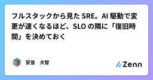
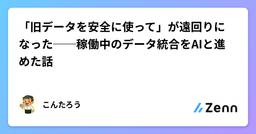

Zennの「AI」のフィード
フィード

MCPがセッションIDを捨ててステートレスになる2026-07-28仕様
Zennの「AI」のフィード
リモートのMCPサーバを2台以上に並べた瞬間に踏む地雷がある。1台目が発行したセッションIDを、ロードバランサの気まぐれで振り分けられた2台目が知らない、という問題だ。これを避けるために、みんなスティッキーセッションを効かせたり、共有のセッションストアを噛ませたり、ゲートウェイでリクエストボディを覗いて振り分けたりしてきた。本来HTTPの世界がとうに卒業したはずの苦労を、AIエージェント界隈は2年かけてもう一度やり直していた。その前提を、今日公開された Model Context Protocol の 2026-07-28 仕様がまるごと捨てた。MCP(LLMに外部ツールやデータを繋ぐ...
10時間前

AI Security Labの実験環境 ― OllamaとPythonでLLMの動作を実験する
Zennの「AI」のフィード
はじめに前回の記事では、AI Security Labを始める理由と、このLabで何を明らかにしたいのかについて説明しました。AI Security Labを始める ― AIに、どこまで仕事を任せられるのかAIに、どこまで仕事を任せてよいのか？この問いについて、AIを実際に動かし、意図的に条件を変えながら実験していきます。そのためには、実験ごとに環境が変わってしまうと、結果を比較しにくくなります。そこで、AI Security Labでは、できるだけ共通した環境を使って実験を行っています。この記事では、今後の記事で共通して利用する実験環境について説明します。実験そ...
11時間前
AIでホイッスルを作る
Zennの「AI」のフィード
こんにちは、ポリ五郎です。AIモデリングの第3弾です。今回は、大音量のホイッスル(防災笛)をAIに作ってもらいました。実際、鳴るの?めちゃくちゃ大音量で鳴ります。実際に3Dプリントしてみて、確認済みです。笛は、外から見ても良し悪しがまったく分からない部品です。音を決めるのは、中にある息の通り道と、その先にあるエッジの位置です。画像を見るのが苦手なAIが、見えない寸法をどうやって確かめるのか。今回はそこがポイントです。これまでの記事はこちらです。AIで3DモデリングAIでラズパイケースを作る(poly とスキルの入れ方はこちら) 笛が鳴るしくみ笛は4つの部分でで...
11時間前

ループエンジニアリング、自分のループは"育つ"側になってる？ ── 輪を全部数えるツールを作った
Zennの「AI」のフィード
前回の記事「ループエンジニアリングには2種類ある」では、エージェントに回させるループを2つに分けた。直すループ: 目標は固定。目標とのズレを測って、行動を直す（テストを通す、lint を直す）。育つループ: 内側のループの結果を使って、目標そのものを書き換える外側のループがある。組織学習でいうダブルループ。そして、育つループのつもりで直すループの作りのまま回すと、無難な案の周りへ静かに寄っていくのではないか、と書いた。書いたあとで、困ったことに気づいた。自分のループがどちらになっているのか、見て確かめる方法がない。手順書やスキルを読み返すと、たいてい「結果を目標へ戻す道」...
12時間前

Jevがポケモンをクリアした。でも裏にClaudeがいた──AIも「上司」と「現場担当」に分かれ始めた
Zennの「AI」のフィード
少し前に、JevというAIについて書きました。文章を生成するAIではなく、「この中ならどれ？」 を高速に判断するAIです。例えば、この問い合わせはA. 営業B. サポートC. 請求D. その他のどれ？みたいな判断。LLMに比べると、かなり地味です。文章を書いてくれるわけでもない。コードを書いてくれるわけでもない。人生相談にも乗ってくれない。選ぶ。判断する。点数を付ける。だいたいそれだけ。前の記事では、毎回LLMに部長会議を開かせなくてもいいのでは。という話を書きました。https://zenn.dev/yuruconsa/articles/...
12時間前
AI時代の個人開発でGit Flowを考え直した
Zennの「AI」のフィード
!連載「Git勉強しなきゃを終わらせる」の5話です。前の話：なぜブランチが必要なのか この連載を書いていて、途中で気づいたこのGit連載を書いている途中で、気づきました。「あれ。これ、マージしたら公開されるんじゃね？」一人で書いている記事です。なのに、作業ブランチがあり、レビューがあり、マージ先を分ける必要まで出てきました。なぜこんなことになったのか。理由は簡単です。一人で作っているのに、変更するのが一人ではなくなったからです。 最初は、もっと単純に考えていたこの連載の記事は、GitHubのリポジトリで管理しています。記事を書く。ブランチを作る。プルリ...
12時間前

フルスタックから見た SRE。AI 駆動で変更が速くなるほど、SLO の隣に「復旧時間」を決めておく
Zennの「AI」のフィード
!Google の SRE 本・SRE Workbook・DORA の公式ページを一次資料として整理したもの。2026 年 10 月時点。 1. 要点SRE は DevOps の実装。 DevOps は理念で、SRE はそれを役割と具体的なプラクティスに落としたもの。Google 自身が class SRE implements interface DevOps と書いているSLO とエラーバジェットは、関係者の目線を数字に残す道具。 平時に「どこまでの不安定さなら許すか」を合意しておき、リリース期限や障害のプレッシャーで判断がぶれないようにするSLO だけでは足り...
12時間前

AIを使いこなす人は「設計から入る人」と「開発から入る人」の2種類いる
Zennの「AI」のフィード
AIを使いこなしている人を見ていると、大きく2つのタイプに分かれると感じます。どちらにも共通する前提は、言語化が上手いことです。違いが出るのは「どこから始めるか」です。この記事では、2つのタイプの違いと、知識が少ない人でもAIで成果を出せる進め方を紹介します。 タイプ1：知識先行型（設計 → 開発）業務知識や設計の基礎がしっかりある人です。AIの出力を叩き台として受け取り、自分の知識で修正を入れていきます。AIは優秀な副操縦士という位置づけです。手戻りが少なく、コストも小さく済みます。たとえば、ログイン機能のAPIをAIに作らせたとします。知識先行型の人は、出てきたコードを見...
12時間前

ドキュメントを読んでいて、どの瞬間でもすぐ AI とチャットできるリーダーを作った
Zennの「AI」のフィード
TL;DRローカルの HTML 文書をブラウザで開き、分からない語句をドラッグすると、その場に小さなチャット窓が開きます。答えはポップオーバー・子セクション・リンクのどれかの形で、文書の本文に直接書き込まれます。前の答えを待たずに、次の語句をいくつでも並行して聞けます作った理由は、読んでいる自分の意識を途切れさせないためです。ターミナルに移って質問を打ち、前の返答を待っているうちに、さっきまで何を読んでいたのかを忘れる。それを無くしたかったのです速さは、文書を一度だけ読ませたセッションを質問ごとに claude -p --resume <base> --fork-...
12時間前
Claude Codeの週制限で自動化を止めない — プロバイダ自動フェイルオーバーの設計
Zennの「AI」のフィード
Claude Codeを定時ジョブの実行エンジンにすると、避けて通れない壁があります。使用量の週制限(weekly limit) です。ある夜、カレンダー同期ジョブがこう言って止まりました。You've hit your weekly limit · resets Jul 26, 9pm (Asia/Tokyo)人間なら「じゃあ日曜まで待つか」で済みますが、自動化は毎日走りたい。この記事では、制限を検知して別のエージェントCLI(Codex等)へ自動で切り替え、制限明けにClaudeへ戻す「共通runner」の設計を紹介します。 方針: CLIを直接呼ばないまず、各ジョブ(メー...
13時間前

AIのFX戦略をフォワードでも通用させるには？1000戦略の選び方を変えて検証
Zennの「AI」のフィード
前回は、AIにUSDJPYの戦略を1000個作らせました。2023〜2024年のバックテスト1位は +1,886.2 pips。ところが、同じ条件を2025〜2026年へ適用すると -29.8 pips でした。原因として考えられるのは、1000個の中から「過去の利益が最大だった1個」を選んだことです。そこで今回は、利益1位を選ぶのをやめます。年を分け、コストを悪化させ、周辺パラメータも確認してから1個を選べば、後半期間の悪化を防げるか検証しました。先に結果を書くと、選ばれた戦略はフォワードで +9.0 pips、PF 1.010 でした。赤字転落は避けましたが、利益はほぼゼロ...
13時間前

公式コース「AIの能力と限界」を完走したので、4つの特性を無料モデルで実験してまとめる
Zennの「AI」のフィード
Claude Code 101、サブエージェント編、in action 編、AI活用力編と、Anthropic（アンソロピック／Claudeの開発元）の無料コースを受けては、記事にしてきました。今回は「AIの能力と限界」です。前回の「AI活用力」の姉妹コースで、あちらが人間側の力、こちらが機械側の特性を扱います。13レッスンを受けて、クイズに合格して修了しました！このコースの売りは、「AIはなぜここでは賢くて、あそこでは嘘をつくのか」を、4つの特性で説明し切ることです。✅ 特性は、次トークン予測・知識・作業記憶・操縦性の4つ。この4つを知っていれば、新しいモデルが出ても驚かなくなる、と...
14時間前

JevK5 v0.3実機検証｜Jev Decision Index・JevBench評価と全判断モデル比較マスター表 1
1
Zennの「AI」のフィード
!先に結論を言いますJevK5 v0.3（4B）は現行の小型Jevライクオープンモデルではトップクラス:ベンチマーク比較サイト「Benchmark Heaven」において JevK5 v0.3 4B は 総合 7 位 にランクインし、同規模の Imajev-4B（10位）を明確に突き放しました。当環境での実機検証でも、その極めて高い実力が裏付けられています。8B クラス（Lev-8B）を凌駕する分類精度と較正性能:統一評価ベンチマーク S1Bench（300問）において、分類 5 タスク正解率 86.80% を記録し、Full Attention 8B モデルである Le...
14時間前

「旧データを安全に使って」が遠回りになった──稼働中のデータ統合をAIと進めた話
Zennの「AI」のフィード
稼働中のデータ統合を表した概念イラスト（AI生成）。前回：サブスクを使い倒すために、Codex自身にもトークン消費量を把握させた話「旧システムのデータを、安全に使いたい」AIに伝えたのは、ごく自然な要望だった。長年使ってきたデータを壊したくない。その資産を生かしながら、新しい機能を作りたい。ところが、開発を進めるうちに、旧システムから取り込んだデータと、新しいシステムで作るデータが別々に扱われる構成になった。検索やデータ活用のたびに、両方を読み、違いを吸収する処理が必要になっていった。やがて、速度低下や検索結果への取りこぼしが問題になった。ここでいう取りこぼしは、保存したデー...
15時間前

エージェント協調環境、3週間で会話は1件 — 残るツールは「誰が起動するか」で決まる
Zennの「AI」のフィード
3週間前、私は意気揚々とこんな環境を組みました。Claude Code と Codex を agmsg で会話させ、claude-squad で複数セッションを並べ、h5i で並行実装を安全にマージする——「人間がコピペ係をやる時代は終わった」というやつです。Brewfile にも全部書きました。記事も書きかけました。そして今日、ふと思い立って shell の履歴を数えてみたんです。結果はこうでした。agmsg のメッセージDBに、会話が1件しか入っていませんでした。この記事は、その顛末と「なぜそうなったのか」の分析です。ツールの紹介記事のつもりで書き始めて、実測したら別の記事に...
15時間前

Claude Code のトークンは96.3%が「読み直し」だった — 効いた対策と、効果の正しい測り方
Zennの「AI」のフィード
定額プランなのに週の上限に当たる。あるいは API 請求が思ったより伸びている。そんなとき、「何にトークンを使ったか」を1行で説明できますか?私はできませんでした。だから測りました。結果はかなり意外で、そして自分が疑っていた犯人は全員シロでした。先に結論を書きます。私の消費の **96.3% は、自分が書かせた文章ではなく「過去の文脈の読み直し」**でした。そして5週間後、運用を見直してから Claude に測り直させると「86%減っています。運用改善が効いています」と報告してきました。でも私には「その週、そもそもあまり使ってなかったのでは?」という引っかかりがありました。物...
15時間前
【Cursor pstack】 Build the environment behind 2,500 agent PRs a month
Zennの「AI」のフィード
A practical guide to building an environment where you can delegate development work to AI agents, using Cursor's pstack. It starts from the ideas that supported 2,500 pull requests a month. It explains how to verify an agent's artifacts and covers every Playbook, Principle, and Skill in pstack.It also shows how to build a verification skill for your own app and how to research, design, and plan with an agent. The book has 39 chapters.When you finish, you can start building an environment that lets you delegate more of your own project to agents.
15時間前

ローカルLLM（Qwen3:8b, Qwen3:14b）に人狼をやらせて、推論能力を検証してみた
Zennの「AI」のフィード
はじめに今回は、LLMに人狼をやらせてみたら面白いかなと思ったので、人狼システムを自作してLLM同士で遊ばせてみました。最初は9人村でやっていたんですが、結局LLMの何を見ているのかが曖昧になるログがくそ長くなって、試合内容を把握するのが面倒トークン数も膨大になる（全員が全員の発言を読むので、人数が増えるとピラミッド的に増えていく感じです）という感じだったので、4〜5人くらいの単純な村から実験していくことにしました。今回は 5人村（人狼1・狂人1・占い師1・狩人1・市民1） で実験したので、その結果を共有しようと思います。なお、今回の実験の目的は、人狼が強いLLMを...
15時間前
WebX68k登場！ブラウザで動く伝説のX68000徹底解説
Zennの「AI」のフィード
💡 本記事について本記事は、AIの実験・活用メディア「大人のAIアソビ」の技術サテライト版です。キャラクター（武将クマの「ぷれい」＆青髪AI美少女「ジェミー」）による軽快な掛け合い・オチ対話劇の全文は、👉 本館の元記事 にて公開しています。 🚀 まとめ ＆ 本館のご案内本記事の完全版では、武将兜のクマ「ぷれい」と知的なAI美少女「ジェミー」の軽快な掛け合い・オチ対話劇を交え、実際の開発現場での生々しいシミュレーションや採用見送りの顛末を詳しくお届けしています！AIの最新トレンドや実践的な活用検証に興味のある方は、ぜひ本館ブログにも遊びに来てください！👉 【大人のAI...
16時間前

RAGは「検索して答える」だけでは足りない 基本・設計・評価の実践ガイドを書いた
Zennの「AI」のフィード
はじめに「RAGを組んだ。質問すれば、それらしい回答も返ってくる」——そこまで動くと、ひとまず完成したように感じる。しかし、データには存在する施設が検索結果に出ない。出典に書かれていない予約条件をAIが補ってしまう。データを更新したのに、古い情報が検索に残る。こうした問題は、回答が自然に読めるかどうかを見ているだけでは気づきにくい。自治体の相談先検索アプリ「Trait Compass」を題材に、この問題をRAGの基本・設計・評価の三つの観点から整理した本を公開した。https://zenn.dev/yun_bow/books/95ad28d3438f4d本稿では『RAGの基...
16時間前